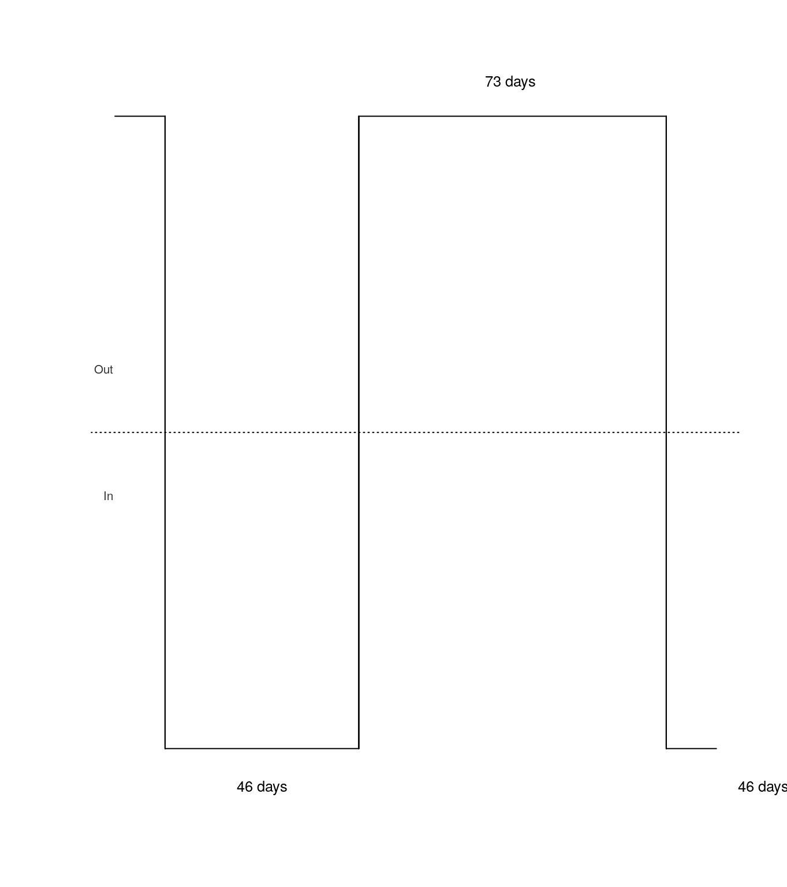

vignettes/migrbc.Rmd
migrbc.RmdThis package provides mechanisms for classifying border crossings using a rules-based methodology. The goal of performing this type of classification is to identify any potential long-term migrants. A long-term migration is defined as a border crossing involving a change in residence status. A border crossing counts as a long-term migration to/from a country if it entails a change from non-residence to residence or residence to non-residence. The rules-based classification that used to determine a long-term migration is defined by a threshold duration and a test duration, alternatively named window size. Under a 12/16 rule, for instance, the threshold duration is 12 months and the test duration (window size) is 16 months. With a 9/12 rule, the threshold duration is 9 months and the test duration (window size) is 12 months. This vignette demonstrates the use of the functions, by calculating the days of residence and migration statuses, with a small made-up set of border crossings. For more information about the methodology applied, please visit Stats NZ (2020) https://www.stats.govt.nz/methods/defining-migrants-using-travel-histories-and-the-1216-month-rule.
Rules based classification simultaneously assign residence status and migration status, based on the direction of the border crossing, the person’s residence status before the crossing, and the length of time spent in or out of the country after the crossing. Obviously, the Outcome-based rules need to deal simultaneously with two sorts of units: border crossings and people, and hence, the input data must contain information about the two units. The following outlines the main table structure of the input data.
| journeyId | personId | is_arrival | date_crossing | journey_sequence | journeyId_prev |
|---|---|---|---|---|---|
<Integer> |
<Integer> |
<Integer> |
<Character> |
<Integer> |
<Integer> |
The id of a journey |
The id of a person |
The direction of the border crossing, i.e., 0:departure, 1:arrival |
The date of border crossing, such as 2012-01-01 |
The order of multiple journeys made by the person |
The previous journey id |
Sometimes, a piece of data about residences’ initial status is required. A residence initial status is referred to as the residence status before he/she made the first journey in the target country, i.e., New Zealand.
| personId | res_status_initial | date_finalised |
|---|---|---|
<Integer> |
<Integer> |
<Character> |
The id of a person |
The initial residence status: 0: Non-resident, 1: resident |
The date of the residence status confirmed, such as 2010-01-01 |
A comprehensive rules-based methodology is outlined as follows:
---
Terms:
Rb: resident status before - Resident or NonResident
Ra: resident status after - Resident or NonResident
LTM: Long term migration - true or false
Journey: Travel movement of a person involving a border crossing:
Depart or Arrive
Define Parameters:
Tw: Window size - the maximum number of days within which the resident status of
the [persons journey] is resolved (specified as 487 days).
Tm: Threshold for Accumulated days [outside the country as departed]. It is
required for Migration (specified as 365 days).
Derived Parameters:
Tn: Threshold for Accumulated days required for Non-Migration (Tw-Tm). Journey
stays within resident country (derived as 122 days).
Ts: Threshold for instant assignment of non-migration for successive return
journeys (Tw-Tm)x2 (derived as 244 days).
Define the Input Set:
Attributes of the person are
- residence status before
- date resolved residence status before -> date Rb
- list of journeys arranged in time ascending order
Attributes of each journey are
- journey identifier (JID)
- date of crossing
- direction
Working Values for each journey
- duration
Final Results
- journey identifier (JID)
- prev journey identifier (prev JID)
- residence status before (Rb)
- residence status after (Ra)
- long term migrant -> LTM ## or Rb or Ra
- date resolved residence status before -> date Rb
- date resolved residence status after -> date Ra
- date resolved long term migrant -> date LTM
Algorithm:
## We calculate the outcomes for a single person
## pre-check and assignment
## check the provided journey list is a valid sequence and assign duration for
## each journey.
For each journey in list of journeys
## arrive / arrive OR depart / depart
if the journey direction has not changed from prior journey
then raise error
## 0 if same day
journey.duration is days elapsed until next journey
## artificial to make later calculations easier
if this is the last journey then duration is set to Tw
journey.prev journey id is the prior journey.journey id
## Run Main Calculations
For each journeyUnderReview in list of journeys
## the resident status before of this journey is the resident status
## after of the prior journey or person if first journey
if first journey
journeyUnderReview.[resident status before] = person.
journeyUnderReview.[date Rb] = person.[date Rb]
else
journeyUnderReview.[resident status before] = previousJourney.
journeyUnderReview.[date Rb] = previousJourney.[date Ra]
## Step 1 of 3 - find our migration direction status
if (journeyUnderReview.[direction] is Depart AND
journeyUnderReview.[resident status before] is Resident)
OR (journeyUnderReview.[direction] is Arrive
AND journeyUnderReview.[resident status before] is NonResident)
JourneyMigrationDirection = Migration
else
JourneyMigrationDirection = Non-Migration
## Step 2 of 3 - look ahead to set *instant* LTM. These set LTM = false for
## any qualifying journeys basically any journey which is a return (Arrive
## for resident OR depart for NonResident) within Ts days of date of crossing
## of JourneyUnderReview do a look ahead to see if any Ts threshold for
## instant non-migrations can be set.
if JourneyMigrationDirection = Migration
for each journey in list of journeys starting from the journeyUnderReview
if journey.[date crossing] > journeyUnderReview.[date crossing] + Ts
Exit for loop
## The journeyUnderReview is in migration direction and journey is a
## return.
if journey.[sequence] is Even
journey.[long term migration] = false
journey.[date LTM] = maximum ( journey.[date of crossing] )
and ( journeyUnderReview.[date Rb] )
## Step 3.1 of 3 - resolve the JourneyUnderReview – Non-Migrating direction
## Non Migrating direction calculation is simple – the journey is not
## a migration.
if JourneyMigrationDirection = Non-Migration
AssignNoMigration ( journeyUnderReview, 0 )
## Step 3.2 of 3 - resolve the JourneyUnderReview – Migrating direction
## For the journey under review (assume = #1), odd successive journeys
## contribute to days migrating and even journeys contribute to days
## not migrating. Now we loop through successive journeys to this one and
## accumulate days migrating and days non migrating.
if JourneyMigrationDirection = Migration
for each journey in list of journeys starting from the journeyUnderReview
AccumulatedDaysMigration = cumulative sum (odd journey duration)
AccumulatedDaysNoMigration = cumulative sum (even journey duration)
## eventually one of the conditions will be met
if AccumulatedDaysMigration >= Tm
AssignMigration(journeyUnderReview, AccumulatedDaysNoMigration)
and exit for loop
if AccumulatedDaysNoMigration >= Tn
AssignNoMigration(journeyUnderReview, AccumulatedDaysMigration)
and exit for loop
## journeyUnderReview has been resolved
add journeyUnderReview to results
## setup for next loop
previousJourney = journeyUnderReview
Sub Routines for Clarity
AssignMigration ( journeyUnderReview, AccumulatedDaysNoMigration )
## migration has happened so LTM is true and residence status is flipped
journeyUnderReview.[long term migration] = true
journeyUnderReview.[date LTM] = crossing date + Tm +
AccumulatedDaysNoMigration
journeyUnderReview.[resident status after] = opposite of journeyUnderReview.
journeyUnderReview.[date Ra] = journeyUnderReview.[date LTM]
AssignNoMigration ( journeyUnderReview, AccumulatedDaysMigration )
## No migration has happened so LTM is false and residence status stays same
journeyUnderReview.[resident status after]= journeyUnderReview.
## date Ra cannot be earlier than date Rb
journeyUnderReview.[date Ra] = maximum of (crossing date + Tn +
AccumulatedDaysMigration) and (journeyUnderReview.[date Rb])
## we only need to set LTM if it has not already been instant assigned
if journeyUnderReview.[long term migration] is not known
journeyUnderReview.[long term migration] = false
journeyUnderReview.[date LTM] = maximum of (crossing date + Tn +
AccumulatedDaysMigration) and (journeyUnderReview.[date Rb])
---migrbc PackageThe function ‘run_rbc’ is the main function of the package ‘migrbc’ for users to classify their migrants based on the rules defined in the algorithm section. The following table lists the parameters of the function.
run_rbc:| Parameters | Description |
|---|---|
crossing_data |
A pre-processed group data contain journeys, movements and IRS or the raw crossing data. |
init_res_status_data |
The raw data of the initial residence status in the format of data frame. |
window_size |
The maximum length of the scanning period. Can be an integer giving the number of days, the result of a call to function difftime, or an object of class Duration. |
threshold_year |
The length of the yearly test period. Can be an integer giving the number of days, the result of a call to function difftime, or an object of class Duration. |
parallel |
Logical. Whether to use parallel processing, to speed up the calculation of migration statuses. Defaults to TRUE. |
n_core |
The number of cores to use, if parallel is TRUE. Defaults to 2. Higher values will typically result in faster calculations on computers with more than two cores. |
max_ram |
Optional, it is used to limit the RAM that can be used by this function. The default value is 5 Gb. |
include_error_columns |
Optional, if it is TRUE, the returned result of error_data will contain two extra columns error_code and error_message. |
mc.cleanup |
Optional, if set to TRUE then all children that have been forked by this function will be killed (by sending SIGTERM) before this function returns. Under normal circumstances mclapply waits for the children to deliver results, so this option usually has only effect when mclapply is interrupted. If set to FALSE then child processes are collected, but not forcefully terminated. As a special case this argument can be set to the number of the signal that should be used to kill the children instead of SIGTERM. |
The parameter crossing_data can be a dataframe object or the data outputted from the usage of the function pre_process. The functionality of pre_process is to divide a large dataset into a number of sub datasets. The function pre_process is useful if the raw data is extreme large, for example, if we have a data of more than 1 million records, then it is better to divide the raw data into small subsets (n_groups = 10, 10 subgroups). The following lists the parameters of the function pre_process.
pre_process:| Parameters | Description |
|---|---|
data |
A dataframe object |
init_res_status_data |
The raw data of the initial residence status in the format of data frame. |
n_groups |
The number of sub datasets that is likely to be returned. |
In this document, we provide a few examples to outline the main functionalities provided by the package. The first thing we need to do is attaching the package migrbc, knitr and parallel to your R studio as follows:
We applied futile.logger for troubleshooting and hence, provided an utility function for initializing the logger. More information about the logger can be found with the link (https://CRAN.R-project.org/package=futile.logger). The parameter log_level is a number in the set of 1, 2, 4, 6, 8, and 9:
futile.logger::FATAL: 1
futile.logger::ERROR: 2
futile.logger::WARN: 4
futile.logger::INFO: 6
futile.logger::DEBUG: 8
futile.logger::TRACE: 9If we would like to output the log information to a file, then you can set the parameter log_path to your own file path. By default, the log_level is set to 1 and log_path is set to NULL.
## to suppresse log messages to the console log_level <- 1 log_path <- NULL migrbc::initialize_logger(log_level = log_level, log_path = log_path) #> logger 'migrbc' has log_level=1 and writes to the console
We use some random made-up data, which is generated by the function setup_random_test_data in the migrbc package. The first argument is the number of people we would like to generate; the second argument is the initial start date; the third argument is the number of journeys a person has; min and max define the random duration gap between two journeys’ crossing dates.
number_of_people <- 10 person_data <- migrbc::setup_random_test_data(number_of_people, initial_date = "2001-01-01", numJourneys = 10, min = 0, max = 100)
In this vignette, we use a 12/16 rule. In other words, the threshold period is 12 months, and the test period (window size) is 16 months - approximately. The “approximately” is necessary because in practice we define the threshold and test periods using days rather than months. Months are difficult to work with, since their lengths vary in complicated ways. The package defines these parameters as a number of days. Instead of 12 months we use 365 days, and instead of 16 months we use 487 days:
## 12/16 ## threshold value dur_threshold_year <- 365 ## window size dur_ws <- 487
If we prefer to process it by a csv file (not provided by the ‘migrbc’), which contains all required columns:
## generate test data person_temp <- migrbc::setup_random_test_data(number_of_people, initial_date = "2001-01-01", numJourneys = 10, min = 0, max = 100) ## write to a temp file temp_path <- tempdir() utils::write.csv(person_temp, file = file.path(temp_path, "data1.csv"), row.names = FALSE) ## read in files using the fread function from the data.table package person_data <- utils::read.csv(file.path(temp_path, "data1.csv"), stringsAsFactors = F) kable(head(person_data[, c(1:5)]))
| journeyId | personId | is_arrival | date_crossing | journey_sequence |
|---|---|---|---|---|
| 1 | 1 | 1 | 2001-01-01 | 1 |
| 2 | 1 | 0 | 2001-01-18 | 2 |
| 3 | 1 | 1 | 2001-02-07 | 3 |
| 4 | 1 | 0 | 2001-03-23 | 4 |
| 5 | 1 | 1 | 2001-05-07 | 5 |
| 6 | 1 | 0 | 2001-06-29 | 6 |
As mentioned in the beginning of this section, this process is ‘optional’ if we want to divide the input data into very small subgroups. It is useful to save memory space for a very large dataset (see Case 1-1). If we choose not to divide the data into a custom size of subgroups, we can pass the person_data directly to the main function, i.e., the main function for process RBC (see Case 1-2).
n_groups <- 10 pre_processed_data <- migrbc::pre_process(person_data, n_groups = n_groups)
## run in non-parallel res <- migrbc::run_rbc(pre_processed_data, window_size = dur_ws, threshold_year = dur_threshold_year, parallel=FALSE) ## run in parallel res <- migrbc::run_rbc(pre_processed_data, window_size = dur_ws, threshold_year = dur_threshold_year, parallel=TRUE, n_core = 2)
The main function run_rbc can process raw data (a data frame object) directly if there is no need to create your own number of subgroups. In this case, the function run_rbc will divide the raw data with n_groups = n_core.
## run in non-parallel with the raw data i.e., the person_data directly res <- migrbc::run_rbc(person_data, window_size = dur_ws, threshold_year = dur_threshold_year, parallel=FALSE) ## run in parallel with the raw data i.e., the person_data directly res <- migrbc::run_rbc(person_data, window_size = dur_ws, threshold_year = dur_threshold_year, parallel=TRUE, n_core = 2)
The result returned from the function run_rbc (migrbc) contains two lists of person instances, i.e., good people list without error and bad people list with error.
| journeyId | personId | res_status_before | res_status_after | is_long_term_mig |
|---|---|---|---|---|
| 1 | 1 | 0 | 0 | 0 |
| 2 | 1 | 0 | 0 | 0 |
| 3 | 1 | 0 | 0 | 0 |
| 4 | 1 | 0 | 0 | 0 |
| 5 | 1 | 0 | 0 | 0 |
| 6 | 1 | 0 | 0 | 0 |
By default, the option ‘include_error_columns’ is FALSE. To view the columns ‘error_code’ and ‘error_message’ in the ‘error_data’, we need to set the option ‘include_error_columns’ to TRUE.
## set up a test data with two person ## a person with bad journeys j1 <- c(journeyId = 1, personId = 1, is_arrival = 1, date_crossing = "2014-02-13", journey_sequence = 1, journeyId_prev = NA) j2 <- c(journeyId = 2, personId = 1, is_arrival = 1, date_crossing = "2014-02-26", journey_sequence = 2, journeyId_prev = 1) j3 <- c(journeyId = 3, personId = 2, is_arrival = 1, date_crossing = "2014-02-13", journey_sequence = 1, journeyId_prev = NA) j4 <- c(journeyId = 4, personId = 2, is_arrival = 0, date_crossing = "2014-02-26", journey_sequence = 2, journeyId_prev = 1) ## initial residence status data i1 <- c(personId = 1, res_status_initial = 0, date_finalised = "2017-01-01") i2 <- c(personId = 2, res_status_initial = 0, date_finalised = "2017-01-01") person_data <- as.data.frame(rbind(j1, j2, j3, j4 ), stringsAsFactors = FALSE) ini_data <- as.data.frame(rbind(i1, i2), stringsAsFactors = FALSE) post_data <- migrbc::run_rbc(person_data, init_res_status_data = ini_data, window_size = 487, threshold_year = 365, include_error_columns = TRUE) ## good result kable(head(post_data$journeys[, c(1, 3, 8, 9, 10)]))
| journeyId | personId | res_status_before | res_status_after | is_long_term_mig | |
|---|---|---|---|---|---|
| 3 | 3 | 2 | 0 | 0 | 0 |
| 4 | 4 | 2 | 0 | 0 | 0 |
| journeyId | personId | error_code | error_message |
|---|---|---|---|
| 1 | 1 | 2 | ‘is_arrival’ cannot be identical to previous one. |
| 2 | 1 | 2 | ‘is_arrival’ cannot be identical to previous one. |
The goal of this document is to provide comprehensive examples to guide potential users to use the package effectively and efficiently. Some background information and the main algorithm are introduced. All information provided belongs to Stats NZ.
Package migrbc contains a function called plot_mig_hist for plotting migration histories. Plots for the one person in random are generated as follows:
plot_test <- function(mig_hist) { plot_mig_hist(date_crossing = as.character(mig_hist$date_crossing), is_arrival = mig_hist$is_arrival, days_to_next_crossing = mig_hist$days_to_next_crossing, show_date = FALSE, cex = 0.8) } number_of_people <- 1 person_data <- migrbc::setup_random_test_data(number_of_people, initial_date = "2001-01-01", numJourneys = 3, min = 0, max = 100) ## run in non-parallel post_data <- migrbc::run_rbc(person_data, window_size = 487, threshold_year = 365, parallel=FALSE) ## plot good result old_par <- par(mfrow = c(1, 1)) plot_test(post_data$journeys)

par(old_par)